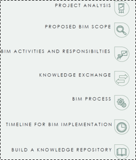
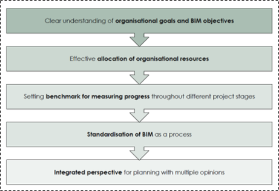
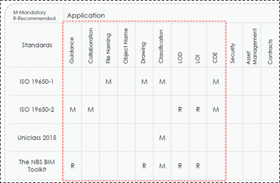
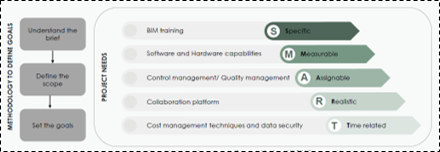
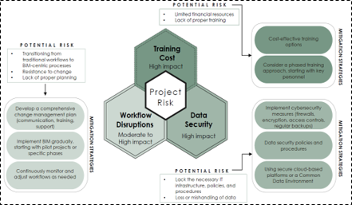

BIM Implementation
Academic projects
Comprehensive BIM implementation strategy including workflow integration, responsibility matrix, and information exchange protocols.
Revit, BIM 360, ISO 19650 Framework Tools
PROJECT OVERVIEW
Aim:
The design and construction firm seeks to strategically transform its technological capabilities through a comprehensive BIM implementation approach, have been selected a pilot project to enhance their organizational BIM maturity, establishing collaborative workflows that will serve as a replicable framework for future project deliveries. By undertaking this initiative, the firm aims to develop a unified understanding of BIM processes, up skill their project team, and ensure alignment with current UK BIM mandates.
1: Collaboration in AEC Industry
Key Highlights:
- Comprehensive analysis of collaborative methodologies in modern Architecture, Engineering, and Construction (AEC) sectors.
- Explored interdisciplinary communication strategies.
- Developed insights into effective team integration and mutual understanding.
Overview of BIM
BIM is a human-computer interaction-based process that enables collaborative management of integrated information for enhancing the overall efficiency of the project throughout its lifecycle.
A. BIM Implementation Plan
The BIM implementation plan outlined covers key elements such as project analysis, defining the BIM scope, outlining responsibilities, facilitating knowledge exchange, documenting the BIM process, and establishing a timeline for BIM implementation.
B. BIM Implementation Strategy
The plan emphasises the importance of clear organizational goals, effective resource allocation, progress measurement, BIM standardization, and an integrated planning approach to ensure successful BIM adoption.
C. Applicable standards
The plan also identifies applicable industry standards and guidelines, such as ISO 19650, Uniclass 2015, and the NBS BIM Toolkit, that should be considered during the BIM implementation process.
2: Technological Interoperability
Key Insights:
- In-depth examination of technology integration in project delivery.
- Analyzed compatibility of different software platforms and data exchange mechanisms.
- Demonstrated proficiency in navigating complex interdisciplinary technological environments.
Project Analysis
Project specifics
Project Phasing
Considering Integrated Project Delivery (IPD) as a collaborative method of project execution. IPD encourages high levels of integration and collaboration among project stakeholders, aligning their interests and objectives from the beginning.BIM activities and responsibility matrix
Project Risk Assessment
3: BIM Standards and Integrated Design
Critical Appraisal:
- Thorough investigation of UK BIM standards (ISO19650, RIBA).
- Comprehensive understanding of Integrated Project Delivery (IPD) principles.
- Critical evaluation of BIM implementation strategies and best practices.
Knowledge exchange process
Collaboration through CDE
Interoperability and Information Exchange
Legal Considerations
Security Mindedness
4: Data Exchange and Lifecycle Management
Methodology Analysis:
- Detailed exploration of information exchange protocols.
- Mapped comprehensive data sharing strategies throughout project lifecycle.
- Developed systematic approach to information management and transfer.
5: Performance Targeting and Strategies
Performance Management:
- Critical assessment of performance target articulation.
- Developed dynamic strategies adaptable across design, construction, and maintenance phases.
- Created frameworks for continuous performance monitoring and improvement.
BIM Process
Naming Conventions
Collaboration Protocol-CDE
Level of Information - LOI
Strategies and tools for clash detection
Level of Development - LOD
Deliverables and timeline